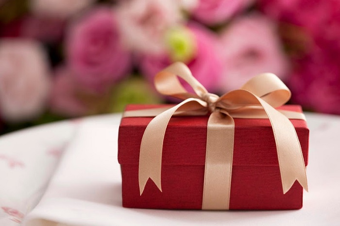
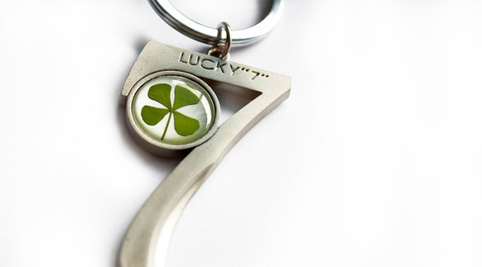
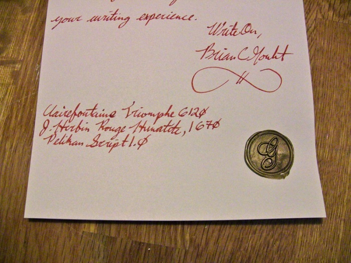
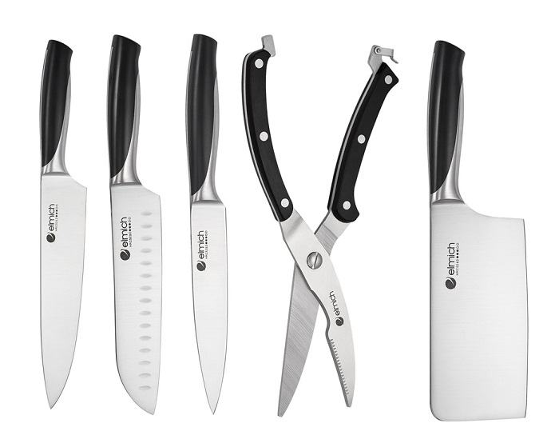
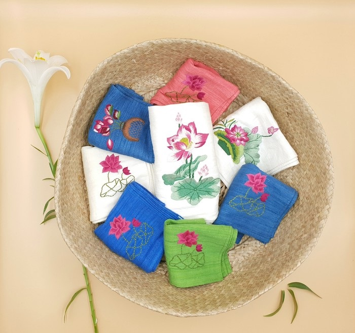

Du lịch Hàn Quốc
Welcome to Korea
Welcome to Korea

Trong văn hóa Hàn Quốc, họ rất coi trọng những vấn đề về lễ nghĩa. Do đó, việc tặng quà đối với người dân xứ củ sâm có một vai trò hết sức quan trọng. Mặc dù chỉ là một hành động nhỏ nhưng nó lại thể hiện nét đẹp trong văn hóa, được xem như nghệ thuật trong giao tiếp và ứng xử. Người Hàn Quốc cũng không đặt nặng về giá trị của món quà. Chỉ cần nó xuất phát từ sự chân thành, được gói ghém cẩn thận là được.
Như đã nói ở trên, người Hàn Quốc rất thích nhận những món quà được gói ghém cẩn thận và tỉ mỉ, cho dù giá trị của nó không lớn. Và một điều khá thú vị trong văn hóa tặng quà của Hàn Quốc đó là họ thích những hộp quà được gói bằng giấy màu đỏ hoặc màu vàng. Bởi theo quan niệm của người dân đất nước này, màu vàng và màu đỏ là hình ảnh đại diện cho sự may mắn. Và những ai được nhận những hộp quà màu này cũng sẽ gặp được nhiều điều may mắn trong cuộc sống.
Bên cạnh đó, một lưu ý khi tặng quà cho người Hàn Quốc bạn nhất định phải nhớ đó là tuyệt đối không được gói quà bằng giấy màu xanh lá, màu đen hoặc màu trắng. Họ quan niệm rằng những màu sắc này đều sẽ mang lại điều không may mắn cho người nhận.
Nếu tìm hiểu về văn hóa tặng quà của Hàn Quốc, bạn sẽ thấy rằng người dân nơi đây rất thích được nhận những món quà có liên quan đến con số 7. Bởi con số này sẽ luôn đem đến sự may mắn. Đặc biệt bạn cần tránh tặng quà liên quan đến số 4. Bởi không chỉ trong văn hóa Hàn Quốc mà tại nhiều quốc gia Châu Á, số 4 luôn được xem là con số “tử”, vì vậy sẽ đem lại những điều xui xẻo.
Các cụ ta vẫn thường có câu “của cho không bằng cách đem cho”. Và câu nói này có vẻ cũng khá đúng trong văn hóa tặng quà của Hàn Quốc. Hãy nhớ luôn phải đưa bằng hai tay khi tặng quà cho người Hàn Quốc. Đây là một hành động đẹp, thể hiện sự coi trọng và cũng là nét đặc trưng trong văn hóa của họ. Đặc biệt khi bạn tặng quà cho người lớn tuổi hơn, hay cho người có chức vụ cao hơn thì điều này càng trở nên quan trọng.
Nếu như bạn được mời đến một bữa tiệc sinh nhật hay đám cưới ở Hàn Quốc nhưng lại chưa có thời gian để chuẩn bị một món quà thì bạn sẽ làm sao? Cách nhanh nhất mà phần lớn mọi người thường lựa chọn đó là tặng tiền mặt. Tuy nhiên, bạn cần phải nhét tiền đó vào bên trong một chiếc phong bì nhé. Bởi vì hành động đưa tiền mặt được xem là thô lỗ, bất lịch sự và rất thiếu tế nhị. Nó làm người nhận cũng có phần không thoải mái.
Để hiểu rõ về văn hóa tặng quà của Hàn Quốc, bạn cũng cần phải nắm rõ về những món quà không nên tặng để tránh gặp phải nhiều tình huống dở khóc dở cười. Và dưới đây là những điều bạn nên lưu ý:
Khi tặng quà, chúng ta đều muốn gửi kèm theo một tấm thiệp ghi những lời chúc tốt đẹp nhất đến người nhận. Và một lưu ý khi tặng quà ở Hàn Quốc bạn cần biết trong trường hợp này đó là tuyệt đối không viết bằng mực đỏ. Bởi trong quan niệm của người Hàn, màu đỏ tượng trưng cho sự mất mát, tang thương. Có thể bạn không hề cố ý nhưng họ cũng sẽ nghĩ rằng bạn có ý đồ không tốt.
Người Hàn Quốc luôn kiêng kị việc tặng nhau dao, kéo hay các vật sắc nhọn. Cho dù bạn định tặng một bộ dụng cụ làm bếp thì cũng nên dẹp bỏ ý tưởng này ngay. Bởi nếu bạn tặng dao, kéo có nghĩa rằng bạn đang muốn cắt đứt mối quan hệ tốt đẹp với họ.
Trong văn hóa của Hàn Quốc, khăn tay là hình ảnh tượng trưng cho sự chia cắt, bi thương và vất vả. Do đó, bạn nên tránh tặng món quà này. Tuy nhiên, những loại khăn khác như khăn quàng cổ thì vẫn có thể tặng nhé.
GỢI Ý TOUR DU LỊCH HÀN QUỐC |
|---|
>> Hà Nội – Hàn Quốc: Seoul – Nami – Everland 5N Bay T’way Air
|
Top 20 điểm tham quan nhất định phải ghé thăm trong hành trình chinh phục Seoul

Điện thoại: 0903357616
Email: thaontps24690@fpt.edu.vn